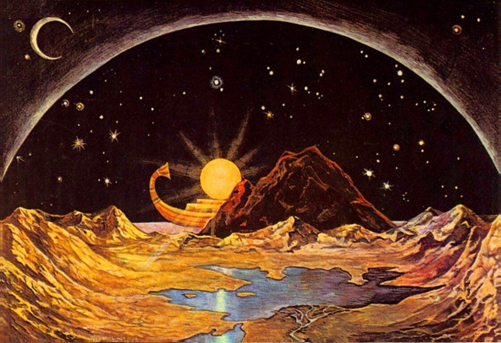
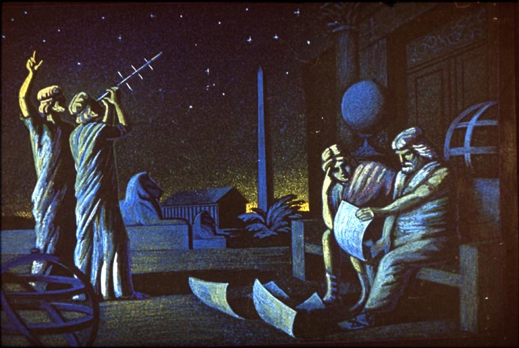

История покорения космоса
Развитие представления о космосе в Средние Века
С ранних времён человек задумывался об устройстве окружающего его мира как единого целого. И в каждой культуре оно понималось и представлялось по-разному. Так, в Вавилоне жизнь на Земле тесно связывали с движением звёздПерейти к разделу «#Месопотамия», а в Китае идеи гармонии переносились на всю ВселеннуюПерейти к разделу «#Древний Китай». Первый значительный толчок в сторону современных представлений о Вселенной совершил КоперникПерейти к разделу «#Коперник». Второй по величине вклад внесли КеплерПерейти к разделу «#Кеплер» и НьютонПерейти к разделу «#Ньютон». Но поистине революционные изменения в наших представлениях о Вселенной произошли лишь в XX векеПерейти к разделу «#Двадцатый век». Даже в начале его некоторые учёные считали, что Млечный Путь — вся ВселеннаяПерейти к разделу «#Большой спор».